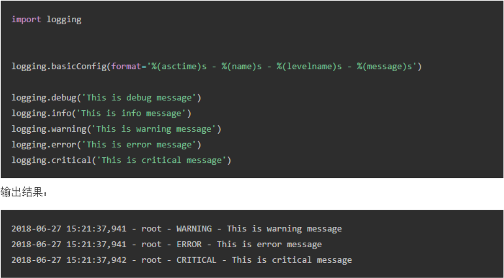
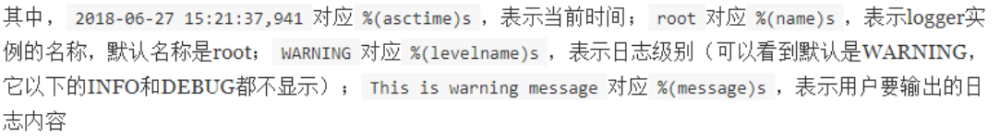
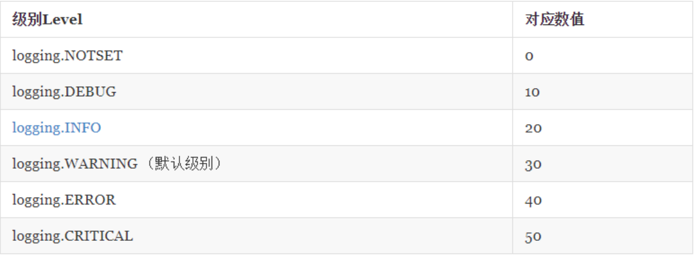
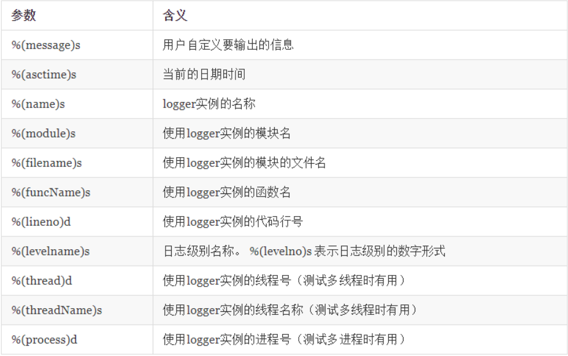
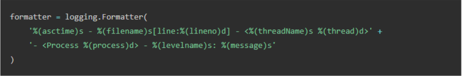
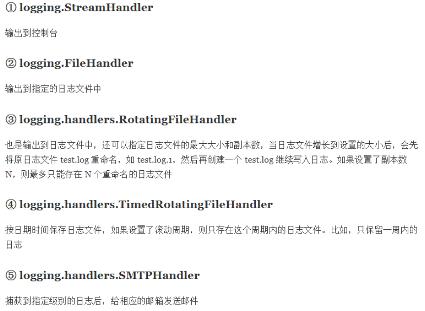
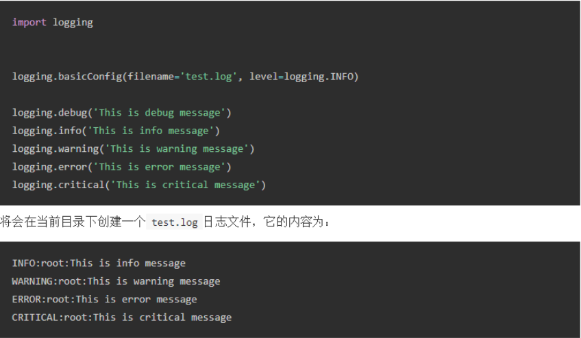

日志是用于记录系统操作事件的记录文件或文件集合
先上一张图，通过解释图来说明日志：

控制台输出的就是记录的日志，代码中的format是输出格式

日志是有级别的，级别表如下：

日志的默认级别是WARNING，它之下的INFO,DEBUG,NOTSET都不会显示，在企业开发中一般设为INFO较好
Formatter用于定义日志的格式，即输出的日志由哪几部分组成
常用的参数如下：

示例，创建Formatter：

Formatter创建好了之后接下来就可以用于Handler
Handler的作用是将文件输出到什么地方，如本文开头示例logging.basicConfig()会默认创建logging.StreamHandler()，将日志输出到控制台上
常用的Handler有：

创建Handler示例：stream_handler=logging.StreamHandler() #创建StreamHandler，输出日志到控制台
stream_handler.setFormatter(formatter) #设置Handler的日志格式
stream_handler.setLevel(logging.INFO) #设置Handle的日志级别
直接使用logging.basicConfig()默认使用root这个logger实例，我们也可以使用logging.getLogger()创建一个自定义命令的logger实例
logger=logging.getLogger(‘aiotest’) #创建一个叫aiotest的logger实例，如果参数为空则返回root logger
最后示例：将日志写入到其他文件
